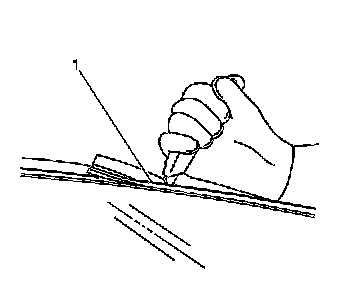
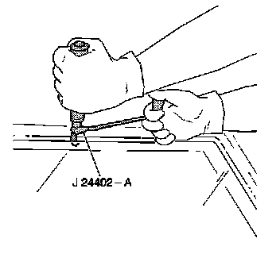
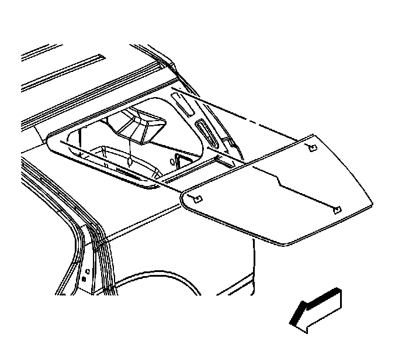

Quarter Window Glass: Service and Repair
Quarter Window Replacement
Tools Required
* J 24402-A Glass Sealant Cold Knife Remover
* J 39032 Stationary Glass Removal Tool
* Urethane Adhesive Kit GM P/N 12346392 or Equivalent
* Isopropyl Alcohol or Equivalent
* Cartridge-type Caulking Gun
* Commercial-type Utility Knife
* Razor Blade Scraper
* Suction Cups
* Plastic Paddle
Removal Procedure
Caution: If a window is cracked but still intact, crisscross the window with masking tape in order to reduce the risk of damage or personal injury.
Important: Before cutting out a stationary window, apply a double layer of masking tape around the perimeter of the painted surfaces and the interior trim.
1. Open the liftgate.
Notice: In order to avoid damaging the antenna lead connector, follow these guidelines:
* Use a plastic tool and carefully pry the connector from the window.
* Do NOT pull on the connector, which may be stuck to the urethane adhesive or the headliner.
2. Disconnect the antenna lead located on the rear quarter window, if equipped.
3. Disconnect the OnStar(R) connector located on the rear quarter window, if equipped.
Caution: If broken glass falls into the defroster outlets, it can be blown into the passenger compartment and cause personal injury.
4. Cover the following parts to protect from broken glass:
1. The upper dash pad
2. The defroster outlets and A/C outlets
3. The seats and carpeting

Caution: When working with any type of glass or sheet metal with exposed or rough edges, wear approved safety glasses and gloves in order to reduce the chance of personal injury.
5. Remove the quarter window reveal molding (1) using a utility knife to cut around the window.

Important: Keep the cutting edge of the tool against the window.
6. Separate the urethane adhesive from the window.
* Leave a base of urethane on the pinch-weld flange.
* The only suitable lubrication is clear water.
* Use J 24402-A , J 39032 or equivalent in order to remove the window.

7. With the aid of an assistant, remove the stationary window from the pinch-weld flange.
Installation Procedure
1. Install a stationary window into the opening. Refer to Adhesive Installation of Bodyside Stationary Windows (Adhesive Installation of Bodyside Stationary Windows) .
2. Connect the antenna lead located on the rear quarter window.
3. Connect the OnStar(R) connector located on the rear quarter window.
4. Remove the double layer of masking tape around the perimeter of the painted surfaces and the interior trim.
5. Test the radio and the OnStar(R) system to verify reception.
6. Close the liftgate.